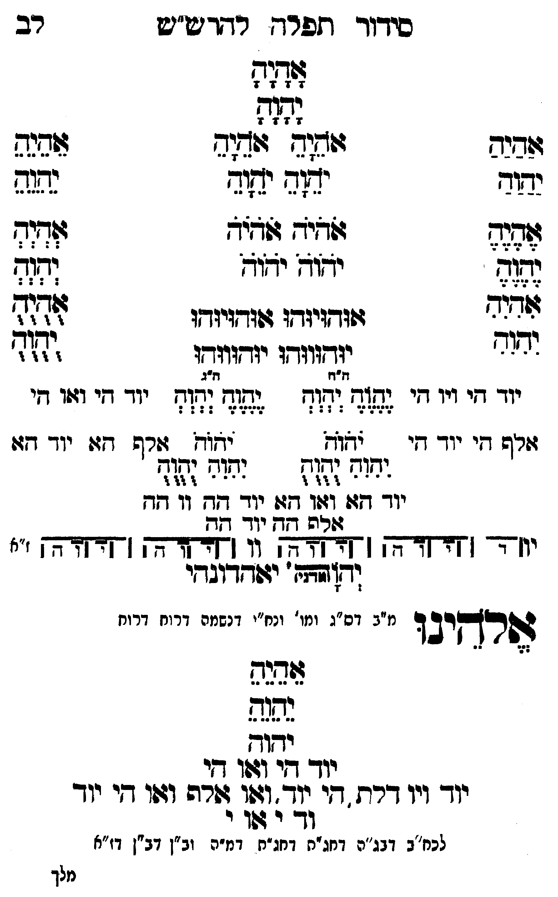

Neue Klartextfassung
=== טבלה === [טור ימין] אַהַיַהַ יַהַוַהַ אֶהֶיֶהֶ יֶהֶוֶהֶ אִהִיִהִ יִהִוִהִ [טור אמצעי] אָהָיָהָ יָהָוָהָ אֹהֵיָהֵ אֹהֵיָהֵ יֹהֵוָהֵ יֹהֵוָהֵ אֹהֹיֹהֹ אֹהֹיֹהֹ יֹהֹוֹהֹ יֹהֹוֹהֹ אוּהוּיוּהוּ אוּהוּיוּהוּ יוּהוּווּהוּ יוּהוּווּהוּ [טור שמאל] אֵהֵיֵהֵ יֵהֵוֵהֵ אְהְיְהְ יְהְוְהְ אֻהֻיֻהֻ יֻהֻוֻהֻ === סוף טבלה === === טבלה === [טור ימין] יוד הי ויו הי אלף הי יוד הי [טור אמצעי] [ה"ח ה"ג] יֶהֶוֶהֶ יְהְוְהְ יֶהֶוֶהֶ יְהְוְהְ יֹהֹוֹהֹ יֹהֹוֹהֹ יִהִוִהִ יֻהֻוֻהֻ יִהִוִהִ יֻהֻוֻהֻ יוד הא ואו הא יוד הה וו הה אלף הה יוד הה [טור שמאל] יוד הי ואו הי אלף הא יוד הא === סוף טבלה === [תרשים: ארבעה צירופי יהוה בקווים אופקיים ואנכיים המחברים את האותיות. לצדי התרשים וי וי וי וי; ז"א.] יאהדונהי יהוה (אדני) אלהינו [מ"ב דס"ג ומי' ונח"י דנשמה דרוח דרוח] אֵהֵיֵהֵ יֵהֵוֵהֵ יהוה יוד הי ואו הי יוד ויו דלת הי יוד ואו אלף ואו הי יוד וד י או י [לכח"ב דבג"ה דחג"ת דחג"ת דמ"ה וב"ן דב"ן דז"א]
Original gegen neue OCR · Niqqud für Vergleich ausgeblendet
Original
=== טבלה === [טור ימין] אהיה יהוה אהיה יהוה אהיה יהוה [טור אמצעי] אהיה יהוה אהיה אהיה יהוה יהוה אהיה אהיה יהוה יהוה אוהויוהו אוהויוהו יוהוווהו יוהוווהו [טור שמאל] אהיה יהוה אהיה יהוה אהיה יהוה === סוף טבלה === === טבלה === [טור ימין]K068-001 יוד הי ויו הי אלף היK068-002 יוד הי [טור אמצעי] [ה"ח ה"ג] יהוה יהוה יהוה יהוה יהוה יהוה יהוה יהוה יהוה יהוהK068-003 יוד הא ואו האK068-004 יוד ההK068-005 וו הה אלף הה יוד הה [טור שמאל] יוד הי ואו הי אלף הא יוד הא === סוף טבלה === [תרשים: ארבעה צירופי יהוה בקווים אופקיים ואנכיים המחברים את האותיות. לצדי התרשים וי וי וי וי; ז"א.] יאהדונהי יהוה (אדני) אלהינו [מ"בK068-006 דס"ג ומי'K068-007 ונח"י דנשמה דרוח דרוח] אהיה יהוה יהוה יוד הי ואו הי יודK068-008 ויו דלת הי יוד ואו אלף ואו הי יוד ודK068-009 י אוK068-010 י [לכח"בK068-011 דבג"ה דחג"ת דחג"תK068-012 דמ"ה וב"ן דב"ן דז"א]K068-013
OCR · fehlbar
סידך ותפרח רו ט"ש רב 3242 ומ זיביה זיזזצ'':גמב ומהK068-001 יוד יד(ד ישוד נפגש אד:ק שגיד ז(גיד וזדוד זל[ יזוח יזוז ושצח ף ל( זודזיזדו גזזדויודו לזזצ יצוב יזדווודו יזדווודו זז[ זרז זיג י- יי יי י גזי ו ((ז זח "ד יי ייי יי זרש דיK068-002 יוד דו - צצוא 02זד: [שרש דווK068-003 יוד דזו יגוש גה( נחוח נהוג - - 4 44 4 - - - - 4 40 4K068-004 יוד דף: וג חש (ד שףK068-005 וו גד -- זבל שץ יגד שש יוז4- [[4קץדד ן [ צאצפ] (: [ת[דקדתק (חדחצחך ("ז (ד[זידתח' יזוחדוגדי דפרקיבד מ"בK068-006 דס"ג ומו'K068-007 ונח"י דנשמה דרוח דרוח בהנש יחוץ יוך די וז(ו די יוךK068-008 ויו דרת . די יוד. וזשו זשרה וג(ו די יוך וךK068-009 י שוK068-010 י לכח"בK068-011 דבג"ה דחג"ח דחג"חK068-012 דמ"ה וב"ן דב"ן דז"א מלךK068-013